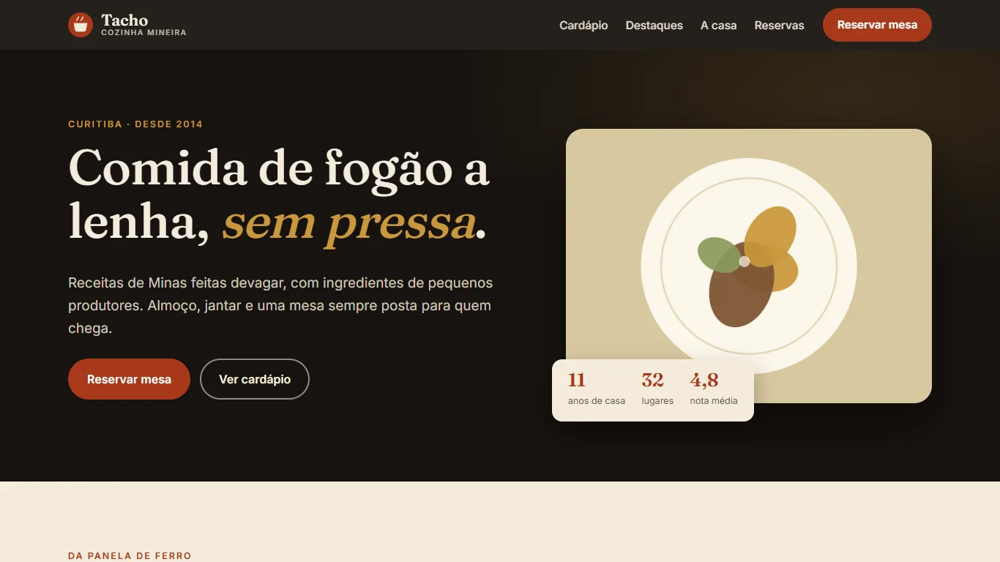
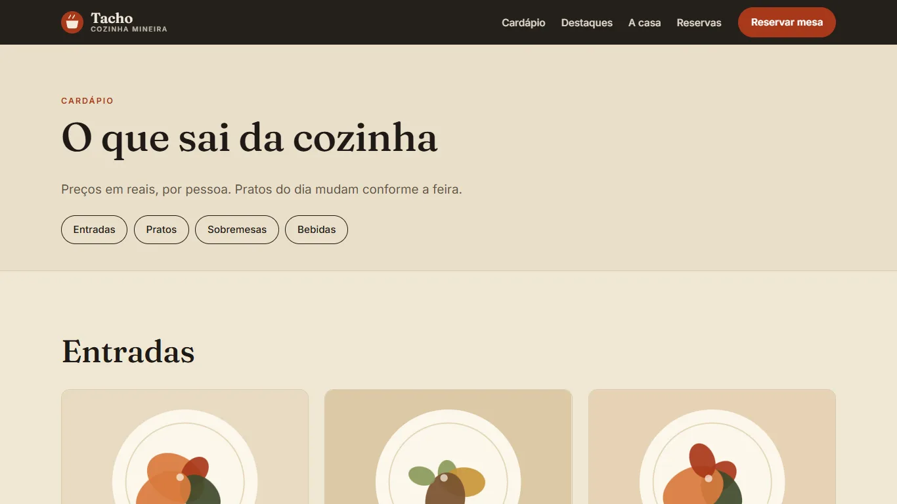

Tacho Cozinha
Tema WordPress próprio (PHP), feito do zero para um restaurante mineiro fictício: o cardápio é conteúdo do painel e as reservas de mesa caem numa lista privada.

O que tem no tema
- Cardápio como conteúdoTipo de conteúdo Prato com taxonomia de seções, preço, etiqueta e destaque na home.
- Reservas de mesaFormulário com nonce, campo isca, data até 90 dias, horários fixos e 1 a 12 pessoas, validado no servidor.
- Lista privada no painelCada reserva vira um item que só aparece para quem administra o site, além do e-mail ao dono.
- theme.json e CustomizerCores, fontes locais e espaçamentos num lugar só; telefone, endereço e horário editáveis sem código.
- Pratos em SVG geradoIlustrações geradas no tema: sem arquivos de imagem para licenciar ou otimizar.
- Celular em primeiro lugarMenu adaptado, contraste AA, foco visível e sem rolagem lateral em 390 px.
- PHP 8
- WordPress
- theme.json
- Custom Post Types
- Taxonomias
- Customizer API
- CSS
Outra página do site

Como instalar
No painel do WordPress: Aparência, Temas, Adicionar novo, Enviar tema, e escolha o tacho-cozinha.zip. O passo a passo, a estrutura de pastas, os testes e um Blueprint do WordPress Playground estão no README.